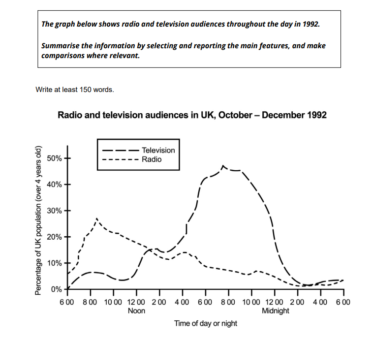

Lesson 5: Reading Tables & Cause-and-Effect Mastery
In this interactive workshop, we bridge your Task 1 bar-chart practice directly into complex data tables while sharpening your Task 2 reasoning with high-scoring C1 cause-and-effect structures.
We will master: (1) reading static vs dynamic tables without drowning in raw numbers, (2) the exact countable vs uncountable quantifier matrix (locking in your "a substantially larger number" habit), (3) expressing numbers as proportions and fractions, and (4) rigorous C1 cause, effect, and solution frameworks for Task 2.
Run Ning through the complete authentic 3-part simulation with Gareth's 1-minute note pad, countdown chimes, and click-to-reveal Band 8.5 models.
Warm-Up: Technology, Daily Habits & Time Use
Get your voice active immediately before diving into written data and essay structures.
Describe a website, application, or online service that significantly changed how you spend your time.
You should say:
- what the website or application is and when you first started using it
- how much time you spend on it each day or week
- what you primarily use it for
- and explain whether this change in your daily routine has been beneficial or disadvantageous.
1. The 1-Minute Note Secret: Write only 4 single trigger keywords down the margin (one per prompt bullet); never write full sentences.
2. The 3-Act Story Arc: Past Context (30s) → Sensory Snapshot / Core Experience (45s) → Reflection / 'So What?' (45s).
3. The Cambridge Anchor: Bullet points are springboards, not an interrogation checklist. If you finish early, deepen your comparison with how life was before.
Q1: How has the rise of digital entertainment affected the amount of time people spend on outdoor hobbies?
Target structure: While digital media offers convenience, what has suffered most is...
Q2: Should employers or schools restrict screen time to protect workers and students from burnout?
Target structure: Not only does excessive screen use cause fatigue, but it also leads to...
How to Read a Table: Static vs Dynamic
Before writing a single word, spend 2 minutes 'reading' the table. Never start describing numbers immediately.
Static tables show data at a single point in time (compare categories using higher than, the largest, whereas). Dynamic tables track changes over time (describe trends using rose, fluctuated, dropped).
Look at the heading: Are the units percentages (%), minutes, thousands, or pounds (£)? Never confuse raw headcounts with proportions.
Examiners penalise assuming facts not given. If a table shows percentage of households with computers, it does not tell you the total number of computers sold.
Example 1: Internet Usage in Great Britain (2000–2005)
Percentage of adults who used the Internet in the 3 months before being interviewed (Source: National Statistics)
| Age Group | Oct 2000 | Oct 2001 | Oct 2002 | Oct 2003 | Oct 2004 | Oct 2005 | Net 5-Year Shift |
|---|---|---|---|---|---|---|---|
| 16–24 | 70% | 78% | 85% | 88% | 90% | 87% | +17% (Peaked at 90%) |
| 25–44 | 53% | 61% | 73% | 76% | 79% | 81% | +28% (Steady growth) |
| 45–54 | 46% | 50% | 59% | 64% | 67% | 75% | +29% (Consistent rise) |
| 55–64 | 24% | 30% | 41% | 45% | 48% | 51% | +27% (More than doubled) |
Data Reading Diagnostic • Click to Test Ning Live
Ask Ning: Is the statement True, False, or Cannot Tell from this data?
1. The table shows the total number of people in Britain who used the Internet.
2. In October 2004, only 48 older adults (55–64) used the Internet.
3. 10% of 16–24 year olds did not use the Internet in October 2004.
4. In 2000, more 16–24 year olds used the Internet than 25–44 year olds.
The Quantifier Matrix: Countable vs Uncountable
This matrix locks in the exact habit from your Task 1 and Essay #5. Review which quantifiers pair with countable nouns, uncountable nouns, or both.
- • a small / large number of
- • a substantially larger number of
- • many / many more
- • few / far fewer
- • fewer and fewer
- • as many as
- • several
- • the greatest number of
a + [adj] + number of.
- • a small / large amount of
- • a great deal of
- • much / much more
- • little / far less
- • less and less
- • as much as
- • far more (expenditure)
- • the largest quantity of
- • more / most
- • a lot of / lots of (informal)
- • the majority of
- • the highest percentage of
- • smaller and smaller amounts of
- • no / none of
Static Table: Average Minutes Per Day Spent by Adults (Over 16)
Static (One Time Point)| Daily Activity | Men (Average Mins/Day) | Women (Average Mins/Day) | All Adults Average |
|---|---|---|---|
| Sleep | 503 mins | 513 mins | 508 mins |
| Housework | 126 mins | 215 mins | 173 mins |
| Watching Television | 161 mins | 137 mins | 148 mins |
| Personal Care | 41 mins | 52 mins | 47 mins |
| Hobbies and Games | 26 mins | 16 mins | 21 mins |
| Childcare | 11 mins | 28 mins | 20 mins |
Notice: Because this table is static, we do not write "rose" or "fell". We write: "Women spent substantially more time on housework than men (215 minutes compared to 126 minutes)."
Live Interrogation: Which Quantifier Fits?
Click the correct option as Ning answers to verify immediately.
1. Men spent slightly [fewer / less] time sleeping than women did.
2. Women spent [much / many] more minutes per day on housework than men.
3. A greater [amount / number] of women than men participated in childcare.
4. Men spent a greater [amount / number] of time on their hobbies than women did.
Varying Figures: Fractions, Proportions & Approximations
Band 8 examiners reward candidates who convert repetitive percentages ("25%", "33%", "50%") into fluid academic language.
Exact Mathematical Equivalents
Academic Approximations (Real Data)
Real charts rarely land on exact integers. Use qualifiers:
"In 2000, only around a quarter of 55–64 year olds accessed the Internet (24%). By 2005, this figure had risen to just over a half (51%), meaning that online engagement in this demographic more than doubled."
Test your instinct: select the most accurate academic fraction or approximation for each figure.
1. In 2004, 76% of 25–44 year olds used the Internet.
2. In 2000, 33% of 45–54 year olds were online.
3. In 2004, 48% of 55–64 year olds accessed the web.
4. In 2005, 19% of pensioners over 65 were online.
Making Approximations on Visual Data
In Task 1, reporting every single digit creates a dry, robotic report. IELTS examiners look for natural academic approximations and multiplier verbs (doubled, halved, tripled) rather than raw listing.
↔ slightly more than
e.g. 52% → just over a half
↔ around / roughly
e.g. 4,000 to 7,850 → almost doubled
↔ nearly / almost
e.g. 24% → just under a quarter
| Item | Year 2000 | Year 2006 | Shift & Mathematical Relationship |
|---|---|---|---|
| DVD players | 3.0m | 5.8m | +2.8m (nearly double 3.0m) |
| CD players | 2.1m | 1.7m | -0.4m (dropped by almost 1/4 of 2.1m) |
| Televisions | 6.2m | 8.5m | +2.3m (rose by slightly more than 1/3) |
| Radios | 4.0m | 5.2m | +1.2m (rose by just over 1/4 of 4.0m) |
| Video recorders | 6.2m | 2.8m | -3.4m (fell by more than half / approx. halved) |
Combine multiplier verb (doubled) with approximation (nearly / almost).
Express as a fraction (fell by just under / nearly a quarter).
Express as a fractional increase (rose by just over a third).
Express with rose by slightly more than / just over a quarter.
Use multiplier verb (halved) with approximation (approximately / roughly).
How to Summarise a Big Table Without Drowning
When a table has 10 columns and 12 rows (e.g. Household Expenditure or Durable Goods 1970–2005), trying to list every number will destroy your Task 1 score. You must group figures together.
Strategy 1: Group by Sector / Category
Combine related rows into macro-categories:
- Leisure: combine Leisure goods (£22.10) + Leisure services (£56.80) = £78.90 per week.
- Transport: combine Motoring (£64.40) + Fares (£10.00) = nearly £75 per week.
- Sin taxes: combine Alcohol (£15.20) + Tobacco (£5.60) = £20.80.
Strategy 2: Group by Trajectory
Identify which categories move together:
- The Surging Items: Motoring (up £18) and Leisure services (up £16) saw the largest gains.
- The Declining Items: Food, tobacco, and fuel & power all fell as a share of weekly spending.
- The Stable Core: Housing remained the second largest expense throughout (£60 to £72).
The band descriptor for Band 7+ explicitly requires you to "summarise the information by selecting and reporting the main features, and make comparisons where relevant." Candidates who describe all 40 numbers get Band 5 for Task Achievement. Candidates who synthesize them into 3 clear comparisons get Band 7.5 to 8.0.
The 5-Graph Foreign Holiday Matching & Overview Laboratory
The 5 Diagnostic Foreign Holiday Graphs (2002–2012)
Inspect the 5 graphs below. Then match each student note (Notes A–E) to the correct graph in Exercise 1.
"general increase • 2006 lowest number in all countries • Germany = highest %"
"overall increase from 2002 • slight decrease after 2010 • similar % from each country in 2002 (18-20%) • 2006 biggest differences"
"generally stable • except Germany = big increase • Germans foreign travel most popular"
"general decrease 2002-2012 • except UK = increase • Spain = small number of hols abroad"
"overall increase 2002–2012 • Spain and UK = hols abroad popular • France least popular"
Focus: Flat general trend contrasted with Germany's surge.
Focus: Universal growth with clear highest/lowest country rankings.
Focus: General downward trend with UK counter-exception.
Focus: Upward trend with a single universal anomaly year (2006).
Expressing Cause and Effect (C1 Syntactic Frames)
In Problem-and-Solution essays, high-scoring essays clearly differentiate between what caused the issue and the resulting impact.
- • "Poor academic performance is largely due to excessive exam anxiety."
- • "The decline of local retail was brought about by the rapid expansion of e-commerce."
- • "Coastal erosion is on account of / a result of rising sea levels."
- • "Increasing pressure to work overtime causes parents to spend less time with their children."
- • "The scarcity of fish gives rise to higher market prices."
- • "Unregulated factory fishing results in the collapse of marine ecosystems."
Preposition Alert: 'due to' vs 'causes'
Correct: "Global warming is caused by greenhouse gases."
Correct: "Global warming is due to greenhouse gases."
Identify whether the phrase introduces the cause or the result.
1. Industrial factory fishing [_____] the collapse of marine biodiversity.
2. The extinction of vulnerable species [_____] unregulated commercial trawling.
3. Stricter quotas should be introduced [_____] protecting endangered breeding areas.
Suggesting Solutions & Expressing Purpose
Every solution you suggest in Task 2 must be backed up by how and why it works. Match each purpose phrase with the correct grammatical verb form.
"Governments should enact stricter fishing quotas in order to protect endangered marine stocks."
"An international regulatory body ought to be established with the purpose of policing maritime borders."
"Taxes must be placed on plastic packaging so that companies become financially incentivised to use biodegradable alternatives."
"Overfishing of the world’s oceans threatens many species with extinction and is putting the livelihood of millions of people around the world at risk. What are the causes of this problem and what can be done to prevent it from happening?"
"The depletion of fish stocks is largely brought about by commercial factory vessels, which make industrial catches excessively easy."
"Heavy tariffs should be levied on illegal trawlers so that commercial fishing ceases to be a low-risk, high-profit enterprise."
Diagram Grammar: Purpose, Cause-Effect & Relative Clauses
1. Four Purpose Formulations (The Hydraulic Lift System)
"The passenger presses the 'up' control button to raise the lift."
"...an electric signal is sent so that the pump is switched off."
"...a signal is sent to a valve in order to shut off the flow of fluid."
"...fluid moves into the housing so as to force the piston up."
2. Natural Process Cause & Result (Stalactite Formation in Caves)
Worksheet 2: Fill the gaps using precise cause/result linkers.
Water leaks slowly into the cave [1. because] there are thousands of tiny cracks and holes in the limestone rock. On its way down, the water absorbs calcium carbonate present in the rock and this [2. results in] a mineral solution. Small drops of this solution form on the roof of the cave. When each drop falls, it leaves behind a ring-shaped deposit of calcite.
This process is repeated many times and [3. as a result / consequently] a thin calcite tube is formed. This tube is sometimes called a soda straw [4. on account of] its shape. Occasionally the soda straw gets blocked [5. due] to a piece of stone or soil. This [6. causes] the drops of solution to pour down the outside of the straw. [7. Consequently / As a result], calcite deposits build up around the straw and these [8. give rise to] the typical cone shape of the stalactite.
3. Non-Defining vs Defining Relative Clauses (Worksheet 3)
Requires commas. Cannot use "that" — must use "which".
"The lift carriage, which is attached to the piston, is forced up."
No commas. Can use "that" or "which".
"Only the straws that get blocked will become stalactites."
Live Practice Workout: Tables & Cause-and-Effect
Work through these 6 interactive exam challenges. Reveal the model after thinking through your response.
Homework Studio: Radio & Television Audiences in the UK (1992)
Write your first draft directly below in about 20 minutes (at least 150 words, aiming for 165–195 words across 4 balanced paragraphs) — with no spell check or AI so we get a true picture of your progress.
Check your 4 habit notes from the Further Education bar-chart mark-up before writing this new report.

• Paragraph 1 (Introduction): Paraphrase what the graph shows (population group, UK, time cycle, Oct–Dec 1992) in 1 sentence.
• Paragraph 2 (Overview): Summarise the 2 main features and overall contrast in 2 sentences — with zero specific percentages or clock times.
• Paragraph 3 (Body 1): Select and compare the first key group of trends with accurate figures and times.
• Paragraph 4 (Body 2): Report and contrast the remaining key trends, peaks, and late-night pattern (do not list every 2-hour tick).
Auto-saved in your browser — copy and send your draft to Gareth a day before our next lesson.